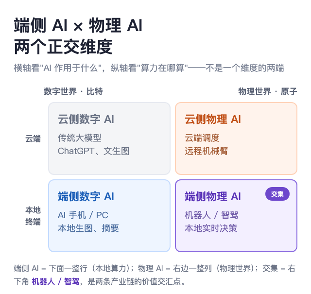
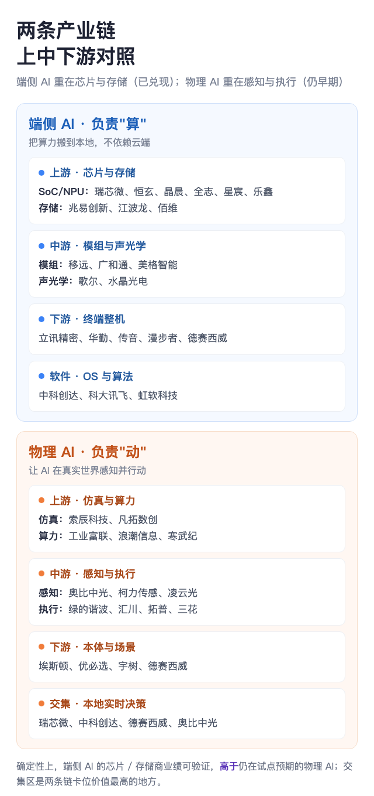

端侧 AI 与物理 AI：一个负责"算"、一个负责"动"——两个正交维度，两条产业链，一张交集图看懂
物理 AI 让 AI 长出手脚、在真实世界干活；端侧 AI 把算力搬到本地设备、不依赖云端。两者不是一条轴的两端，而是两个正交维度。本篇用图 + 表格把概念、区别、产业链和交集标的一次讲清。
一、核心结论
物理 AI 负责"动"，端侧 AI 负责"算"。端侧 AI 是相对"云侧 AI"的部署位置概念，物理 AI 是相对"数字 AI"的作用对象概念——一个物理 AI 系统往往跑在端侧算力上，但端侧 AI 不一定触发实体动作。两者交集（端侧物理 AI）正是价值最高的地方。
二、两个词各是什么
端侧 AI（Edge AI / On-device AI）
- 本质：把 AI 推理直接部署在手机、PC、眼镜、摄像头、车载芯片等本地终端，数据不必上传云端。
- 追求：低延迟、可离线、隐私好、省带宽。摄像头本地识别缺陷弹窗、手机离线跑大模型都是典型——它只输出"判断"，不一定触发实体动作。
- 成熟度：已形成稳定出货与收入，是当前硬件厂商基本盘；2026 年全球边缘 AI 市场约 300 亿美元。
物理 AI（Physical AI ≈ 具身智能）
- 本质：让 AI 感知真实环境、理解物理规律（重力、摩擦、因果），并通过执行器在真实世界完成动作。
- 追求："感知 → 推理 → 决策 → 动作 → 学习"完整闭环。机器人判断杯子会不会倒再调整抓取、智驾雨夜避让行人——它必须"动手"，技术门槛更高。
- 成熟度：黄仁勋称"物理 AI 的 ChatGPT 时刻已到来"，预计 2040 年全球关联产业达 3.25 万亿美元（CAGR 47.2%）；目前仍处"从实验室走向工厂"的早期试点。
三、核心区别对照
| 维度 | 端侧 AI（负责算） | 物理 AI（负责动） |
|---|---|---|
| 本质问题 | AI 在哪里算——本地 vs 云端 | AI 作用于什么——物理世界 vs 数字世界 |
| 核心目标 | 本地完成推理，降延迟、保隐私 | 真实世界完成感知—决策—动作闭环 |
| 硬件形态 | SoC + 存储 + 电池（手机/眼镜/PC） | 机器人本体 + 关节模组 + 传感器 + 执行器 |
| 交互方式 | 屏幕、语音、触控——信息层面 | 机械臂移动、底盘导航——物理操作 |
| 产业链重心 | 存储、SoC、散热、电池 | 精密件、伺服、减速器、仿真软件 |
| 商业化阶段 | AI 手机 / PC 已快速普及、业绩可验证 | 早期试点，约 2027 年批量落地预期 |
| 投资视角 | 存储需求、芯片国产替代、出货量 | 产业化进度、仿真设施、订单兑现 |
关系一句话：端侧 AI 是物理 AI 的"神经与本地大脑"——机器人要毫秒级实时决策，不能等云端往返，所以对物理 AI 而言端侧算力几乎是刚需。反过来不成立：AI 手机本地生图是端侧 AI，却不是物理 AI。
四、概念定位图

端侧 AI = 下面一整行（本地算力）；物理 AI = 右边一整列（物理世界）；交集 = 右下角机器人 / 智驾，是两条产业链的价值交汇点。
五、第三个词：世界模型
这三个词常被一起提，是咬合的一条链。黄仁勋的框架里，AI 从"比特世界"走向"原子世界"需要三件事同时到位：
- 世界模型——AI 的脑内推演引擎：理解"世界如何运转"，预测"我这样做接下来会怎样"。大语言模型预测下一个 token，世界模型预测下一个状态。英伟达 Cosmos 3 是开放的物理 AI 基础模型。
- 物理 AI——把智能装进实体：在真实世界感知—推理—行动—再学习，是最终"能干活"的系统，对应机器人、智驾、工业自动化。
- 端侧 AI——实时安全的算力底座：把感知与策略模型部署到设备本地，让机器能实时、离线、安全决策。三者中落地最先、业绩最先兑现。
整条链：世界模型在仿真里大规模训练 → 通过端侧 AI 把模型部署到真实设备 → 形成能在物理环境感知、推理、行动、再学习的物理 AI 系统。AWS 2026 年 10 月推出的 Physical AI Toolchain 就是打通这三步的产业尝试。
六、两条产业链图

七、端侧 AI 产业链
| 环节 | 代表个股 |
|---|---|
| 上游·芯片/存储 | 瑞芯微、恒玄科技、晶晨股份、全志科技、星宸科技、乐鑫科技、兆易创新、江波龙、佰维存储 |
| 中游·模组/声光学 | 移远通信、广和通、美格智能、歌尔股份、水晶光电、敏芯股份 |
| 下游·终端整机 | 立讯精密、华勤技术、传音控股、龙旗科技、亿道信息、漫步者、德赛西威 |
| 软件·OS/算法 | 中科创达、科大讯飞、虹软科技、润和软件、海天瑞声 |
主控 SoC / NPU 是本地算力核心（瑞芯微是标杆）；端侧 AI 对 DRAM / NOR 存储需求增速显著高于其他赛道，是最强"卖铲"环节。成熟度：AI 手机 / PC 已快速普及，SoC 与存储厂商业绩可验证，确定性最高。
八、物理 AI 产业链
| 环节 | 代表个股 |
|---|---|
| 上游·仿真/算力 | 索辰科技、凡拓数创、能科科技；工业富联、浪潮信息、寒武纪、中科曙光 |
| 中游·感知 | 奥比中光、柯力传感、凌云光、天准科技、禾赛科技 |
| 中游·执行 | 绿的谐波、汇川技术、拓普集团、三花智控、兆威机电、鸣志电器 |
| 下游·本体/场景 | 埃斯顿、优必选、宇树科技、新时达、德赛西威、科大讯飞 |
仿真平台是物理 AI 的"训练场"；3D 视觉、六维力矩传感器是机器人"眼睛与触觉"，谐波减速器、伺服电机、丝杠是"关节与肌肉"。成熟度：仍处早期试点，商业化确定性低于端侧 AI，产业落地节奏是关键。
九、交集区：卡位价值最高
定位图右下角——本地实时决策 + 真实物理动作——是两条产业链的真正交汇，也是机构口中"卡位价值"最高的方向：
| 标的 | 卡位逻辑 |
|---|---|
| 瑞芯微 | AIoT SoC 在机器人、汽车电子、机器视觉等端侧场景高速增长，新一代端侧协处理器支持更大参数模型——物理 AI 的"本地大脑" |
| 中科创达 | 端侧 OS + 车载物理仿真算法，横跨两条链的软件底座 |
| 德赛西威 | 车载域控制器，既是端侧算力载体，也是车端物理感知核心 |
| 奥比中光 | 3D 视觉传感器已接入英伟达 Isaac Sim 仿真平台，感知层同时服务仿真训练与实体机器人 |
十、三点提醒
- 看订单看出货，别只听概念——端侧 AI 的 SoC / 存储厂商业绩能验证，确定性高于仍在试点预期的物理 AI。
- 交叉标的 ≠ 纯正标的——很多个股是被市场"贴标签"蹭上概念的，相关业务占比可能很小，追之前先确认主营是否真在这条链上。
- 题材轮动快、波动大——空仓状态下，这类票要参与只做右侧确认、严格止损；看不懂就只观察。
信息来源：新浪财经、雪球、萝卜投研及公开机构研报整理。个股为公开资料归类的市场概念标签，部分公司相关业务占比有限，产业链位置随业务变化可能调整。
本文仅供学习和研究参考，不构成任何投资建议。股市有风险，投资需谨慎。所有个股列举不作为买卖依据，据此操作风险自担。